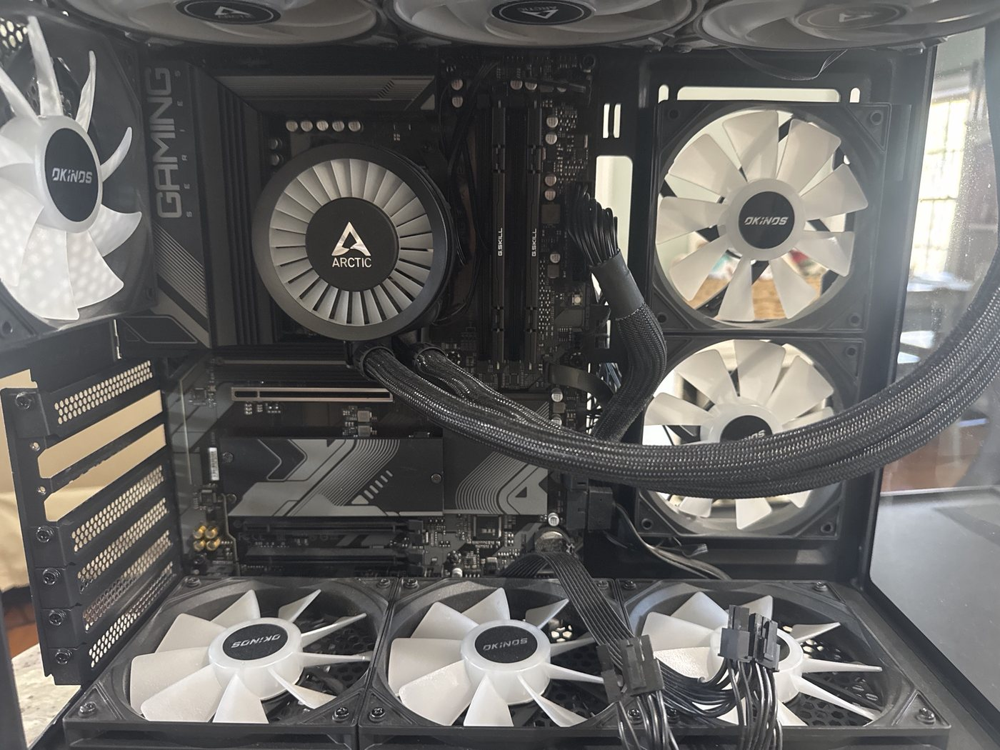
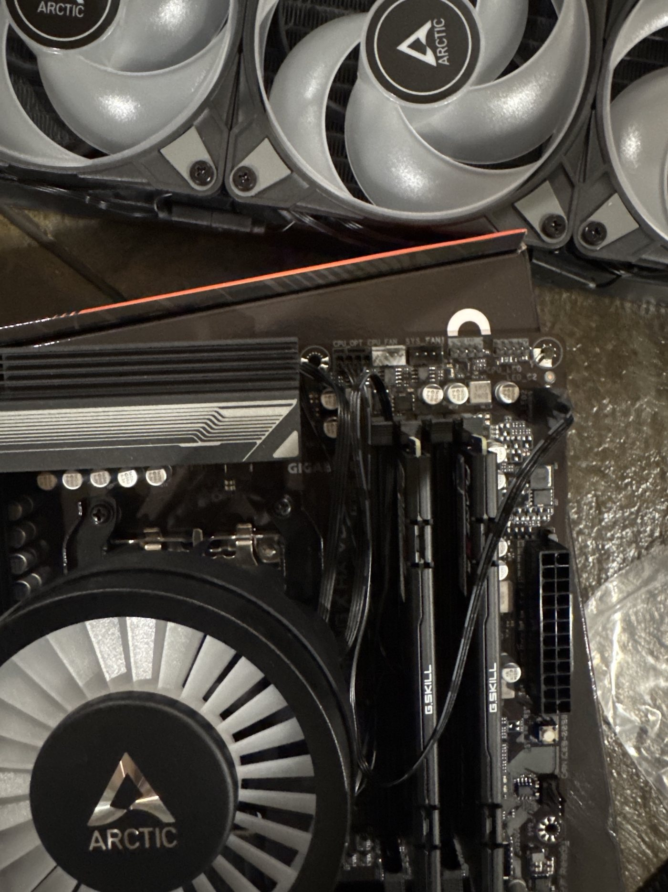
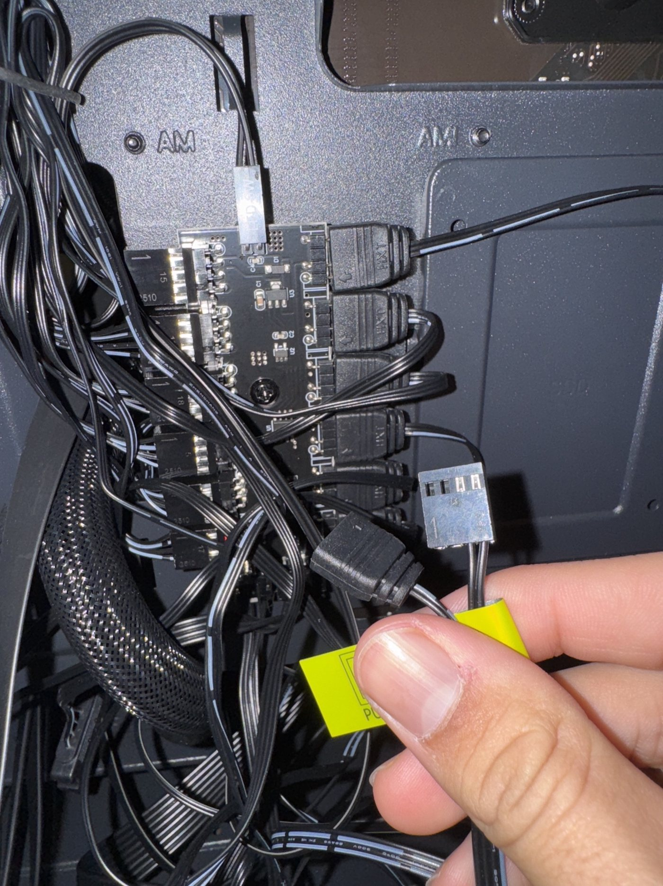

Portfolio
Projects
Things I have built and researched. I will keep adding to this page each semester.
Screen-Time Alert
ECE 1100 Discovery Project · Fall 2026 · Raspberry Pi, Python
The Problem
I spend more time gaming than I mean to. It is quite easy to lose time staring at my monitor when I should probably be doing something more productive. A common solution would be to just look at the clock and set a time limit, yet, I don't listen. So I thought, why not just make a physical indicator that tells me when to stop.
The Process
I already had a Raspberry Pi, so I built the project around it. The Pi sits on my desk next to my gaming PC and runs on its own. Because it is a separate device, I cannot close it from the computer I am playing on.
The system has three parts. First, it detects when a game is running and how long I have been playing. Second, it compares that time to the limit I set. Third, it turns on an LED through the Pi’s GPIO pins, and the light blinks faster the longer I go past my limit.
The Outcome
When the light starts blinking, the reminder is in the room and not on the screen. Ignoring it means choosing to sit next to a flashing light, which is much harder than closing a pop-up. That small bit of friction is the whole point of the project.
I learned three things. Restating a problem can matter more than improving the solution: every app I tried counted time well, but none of them got the message to me. A physical object gets attention in a way software does not. And this was the first time I picked a part from a calculation, wired it, and watched it work the way the math said it would.
Gaming PC Build
This is the first computer I ever built, and it is the PC the Screen-Time Alert monitors. I researched every component myself, learned which parts work together, and assembled it with no prior experience.
It did not go smoothly. At one point I thought everything was lost, and I had to troubleshoot my way back to a working computer. That taught me to slow down and test one thing at a time.




Banks County Community Tech Outreach
Fall 2024 – Fall 2025
After my own build, I built and set up three PCs for members of my community and taught them how to use and take care of their computers. I also helped elderly neighbors with their laptops.
Clubhouse Build
November 2024 – January 2025
I designed and built a poker clubhouse with five friends. We drew up the measurements and plans, did the cutting and assembly ourselves, and stayed within a $2,000 budget.
ECE Deep Dive
ECE 1100 · Fall 2026
I gave a four-minute presentation on the shortage of large power transformers and the modular controllable transformer being developed at Georgia Tech.